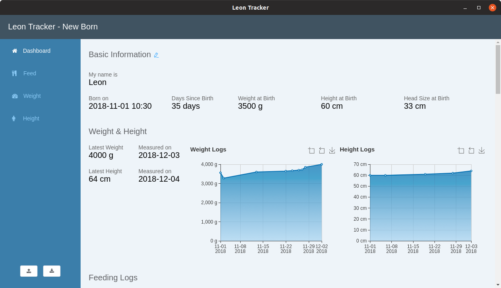

Leon Tracker Preview Version
A free desktop application for tracking your new borns

After waiting for 40 weeks, my little Leon finally arrived, on time. Of course, we are upgraded now to Mom and Dad. Leon started growing since his day one, and our (and every parents') mission is to keep him growing. It is not mandatory, but for us as "Wissenschaftler" it is necessary to know visually if we are doing it right, and it is fun to see his growth in charts. And this leads me to made myself the tool - Leon Tracker for ourselves, based on our needs.
It is not a perfect tool that is bug-free and covers everything. However, I would still like to share it with all fresh parents, in case if you want to track your baby(s) in our way. The tool will be constantly updated and new features will be added based on our further requirements.
It is designed to be as easy as possible to record baby's data.
The entered data will be visualized in one place, you will have a good overview.
The data can be manually backed up in your desired way, and can be restored later.
It tracks how often, how much, and how did you feed your baby.
It tracks your baby's daily weight.
It tracks your baby's daily height.
... and more will be added in future.
Currently, it supports 2 platforms.
The link to the .AppImage file will be provided later.
The link to the .dmg file will be provided later.
The application is not yet built for Windows.